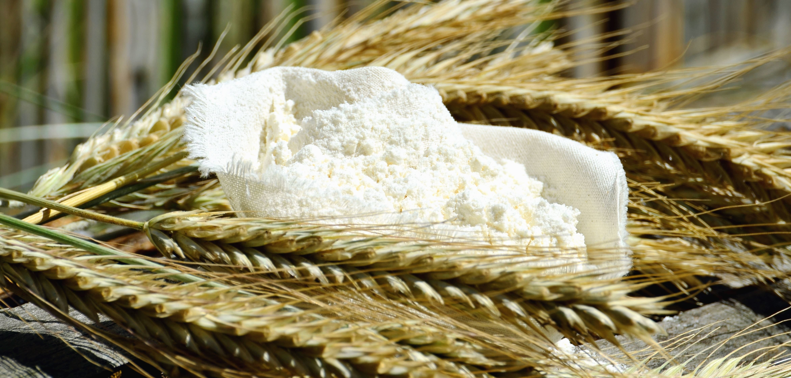

Glutenin and gliadin proteins in flour absorb water and align into gluten strands. Kneading cross-links strands into a network that traps CO₂ bubbles. Protein content determines strength: bread flour 12–14%, AP flour 10–12%, cake flour 7–9%. Salt strengthens gluten; fat inhibits it.
Saccharomyces cerevisiae ferments sugars into CO₂ and ethanol. Active in 75–95°F range; killed above 140°F. Time and temperature affect flavor — longer, cooler fermentation produces more organic acids (lactic, acetic) for complexity. Wild yeast (sourdough) also includes lactobacillus bacteria for tang.
Baking soda (pure NaHCO₃) needs an acid to react (buttermilk, vinegar, brown sugar, cocoa). Baking powder contains its own acid (cream of tartar or sodium aluminum sulfate) plus starch. Double-acting powder releases CO₂ twice: when wet and again when heated. Too much = metallic taste.
At 280–330°F, amino acids and reducing sugars react to create hundreds of flavor compounds — the source of browning on bread crusts, cookie edges, and cake tops. Distinct from caramelization. Requires low moisture at the surface; steam inhibits it (which is why you remove the lid from Dutch oven late in bread baking).
Pure thermal degradation of sugar above 320°F (fructose caramelizes lower, sucrose higher). Creates 100+ flavor compounds including diacetyl (buttery), furan derivatives (nutty), and maltol (sweet). No protein needed — distinct from Maillard. Essential for tarte tatin and crème brûlée crust.
Fat shortens gluten strands (hence "shortening"), coats starch granules, and carries fat-soluble flavor compounds. Butter (80% fat, 18% water) contributes flavor; the water steams and aids lift. Solid fats (butter, lard) cream with sugar to trap air. Liquid fats (oil) coat more evenly for tender, moist crumb.
Whole eggs provide structure (protein coagulation), richness (fat from yolk), leavening (foam), emulsification (lecithin in yolk binds fat and water), and color (carotenoids in yolk). Egg whites alone add structure and lift. Yolks alone add richness and color. Temperature matters: room-temperature eggs emulsify better.